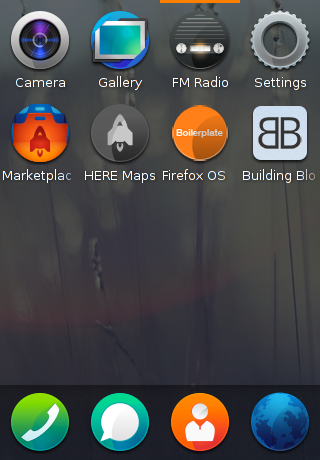
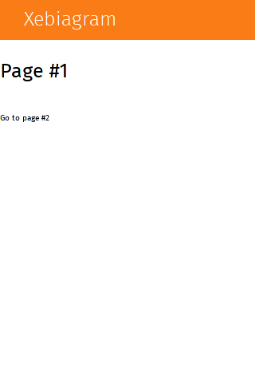
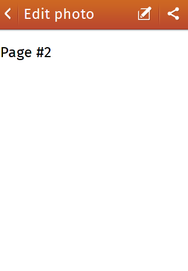
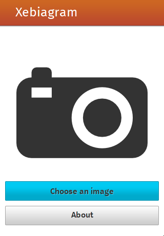
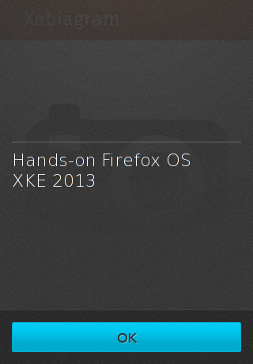
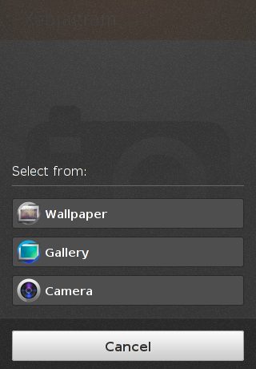
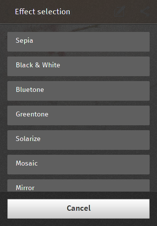
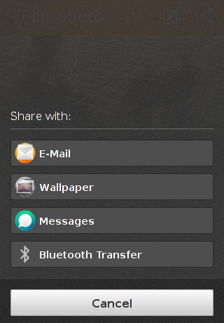
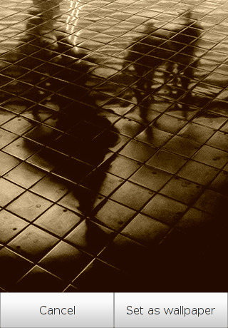

Dans ce workshop, vous allez créer une application à la Instagram permettant d'appliquer des filtres sur des photos, et de les partager.
#00a - Premiers pas avec Firefox OS
- Installez le simulateur et amusez vous avec Firefox OS (testez ce que vous voulez, prenez le temps de vous familiariser avec le système)
- Installez l'application Firefox OS Boilerplate et lancez-la
- Installez l'application Building Blocks et essayez-la également
À la fin de cette étape, vous devriez avoir un bon aperçu de ce qui est possible de faire facilement avec Firefox OS. Vous savez également comment lancer le simulateur et installer une application

#00b - Création du manifest
Nous allons maintenant créer une application.
Récupérez le projet de base :
{% highlight bash %}
$ git clone git@github.com:Nilhcem/xebia-fxos-workshop.git
$ cd xebia-fxos-workshop
$ git checkout master
{% endhighlight %}
Les fichiers de ce projet (triés par importance) :
- index.html : La page principale de l'application, que vous aurez à modifier
- js/app.js : L'endroit où vous devrez écrire votre code javascript
- css/app.css : L'endroit où vous devrez mettre des règles css (si besoin)
- img/ : Contient les icones de l'application. Mettez d'autres images dans ce répertoire, si besoin
- css/buildingblocks : La librairie css permettant de créer des éléments graphiques au look "natif" de la plateforme
- js/psxeffects*.js : Une librairie permettant d'appliquer des filtres sur une image
Le projet ne s'installe pas sur le simulateur car il manque le fichier manifest.webapp.
Votre but est le suivant :
- Créez le fichier manifest.webapp en spécifiant :
- Une version (1.0.0)
- Un nom d'application (Xebiagram)
- Une description (A firefoxOS photo app)
- Le fichier de lancement (/index.html)
- Les icones 60px et 128px (/img/icon-*.png)
- Installez l'application sur le simulateur
- Testez la (cliquez sur les liens pour changer d'écran)
- Regardez le code source (index.html, css/app.css, et js/app.js) pour bien comprendre comment s'effectue le changement d'écran
N'oubliez pas de vous inspirer du code source des 2 applications que vous avez téléchargé dans l'étape #00a pour créer le fichier manifest.webapp.
#01 - Ajout d'un header (ActionBar)
Nous allons ajouter un header (la barre orangée en haut de l'écran) sur les 2 écrans.
- Sur le premier écran, il y aura uniquement le nom de l'application.
- Sur le second écran, il y aura un bouton retour (qui doit fonctionner), un libellé ("Edit photo"), et deux boutons "Edit" et "Share" (pas besoin de logique métier pour l'instant).
N'hésitez pas à consulter la documentation pour savoir comment créer un header et pour choisir quelle icone afficher.


#02 - Ajout d'une Web Activity (pick image)
Le but de cette étape est d'ajouter un bouton "Pick image" qui lancera une Web Activity permettant à l'utilisateur de sélectionner une image.
Une fois l'image sélectionnée, l'application doit passer automatiquement à l'écran #2 et afficher l'image.
Sur le premier écran, il y aura aussi un bouton "About" qui affichera une dialog (un simple alert contenant le texte : "Hands-on Firefox OS\nXKE 2013").
Vous devrez regarder le code source de l'application Firefox OS Boilerplate (ou la documentation officielle) pour voir comment implémenter cette Web Activity.



#03 - Ajout d'effets visuels sur la photo
Dans le second écran de notre application, il faut maintenant afficher une dialog de sélection du filtre à appliquer sur la photo lorsque l'utilisateur cliquera sur le bouton "Edit" de l'ActionBar.
L'utilisateur pourra choisir parmi les effets suivants :
- sepia
- blackwhite
- bluetone
- greentone
- solarize
- mosaic
- mirrorleft2right
Chaque action lancera une fonction qui appliquera un filtre sur une image.
La librarie appliquant un filtre à besoin d'un élément <canvas>.
C'est cet élément qui contiendra l'image modifiée avec filtre.
Il faut donc rajouter un tag canvas dans le 2me écran de notre application, en plus de l'élément contenant l'image de base :
{% highlight html %}
{% endhighlight %}
L'idée est la suivante : Le 2me écran de l'application contient une <img> et un <canvas>.
L'<img> contient l'image originelle, et le <canvas> contient l'image modifiée par la librairie javascript.
Au début, le <canvas> est invisible ; lorsqu'un filtre est sélectionnée il faut :
- Cacher la dialog de sélection de filtre
- Appeler une librarie JS pour faire du traitement sur l'image
- Cacher l'image originale
- Afficher le canvas qui a été modifié par la lib JS
La fonction Javascript permettant d'appliquer un filtre sur une image à la définition suivante :
{% highlight javascript %}
function performEffect(type, orig, canvas);
{% endhighlight %}
Voici un exemple d'appel (ou type est une chaine de caractère ('sepia', 'blackwhite' etc.), #original-image est l'id d'une <img>, et #canvas-image l'id d'un <canvas>):
{% highlight javascript %}
var orig = document.querySelector("#original-image");
var canvas = document.querySelector("#canvas-image");
performEffect(type, orig, canvas);
{% endhighlight %}

#04 - Partage de l'image modifiée
Il ne nous reste plus qu'à partager l'image modifiée.
Pour cela, on va encore une fois utiliser une WebActivity, et nous inspirer, de nouveau, du code de partage d'image de Firefos OS Boilerplate.
Pour tester que le tout fonctionne, essayez de partager l'image avec "Wallpaper" et cliquez sur "Set as wallpaper". Cliquez ensuite sur le bouton "Home" et admirez le résultat.

